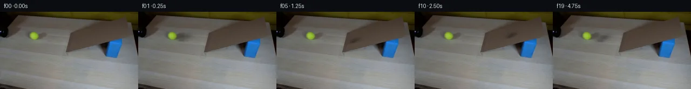

![首帧]()

Round 00
2026-11-04T21:03:52.996010+00:00像素候选变化代码 +279/−0inspection 更新
pixels 568dc6616539cbc6 · code d6c1716eb750319d
查看本轮 generate.py 真实 diff
--- previous/generate.py
+++ current/generate.py
@@ -0,0 +1,279 @@
+"""Deterministic local photograph compositing and analytic rolling motion.
+
+No external scene assets, learned model, rendering engine, or network are used.
+"""
+from pathlib import Path
+import json
+import base64
+import math
+import re
+
+import cv2
+import numpy as np
+from PIL import Image, ImageDraw
+from scipy.ndimage import gaussian_filter
+
+from artifact_io import save
+
+ROOT = Path(__file__).resolve().parent
+TMP = ROOT / '.tmp'
+TMP.mkdir(exist_ok=True)
+W, H = 256, 144
+SOURCE = np.asarray(Image.open(ROOT / 'first_frame.png').convert('RGB'))
+Y, X = np.mgrid[:H, :W].astype(np.float32)
+
+# Image measurements. The trajectory refers to the photographed ball center.
+C0 = np.array([63.0, 44.5])
+ENTRY_X = 126.0
+TABLE_SLOPE = 8.7 / (ENTRY_X - C0[0])
+RAMP_SLOPE = -0.278
+SPEED = 62.0 # projected px/s at the foot of the incline
+ACCEL = 40.0 # projected px/s^2; constant rolling acceleration
+ENTRY_TIME = (ENTRY_X - C0[0]) / SPEED
+TURN_TIME = ENTRY_TIME + SPEED / ACCEL
+EXIT_TIME = ENTRY_TIME + 2 * SPEED / ACCEL
+ENTRY_Y = C0[1] + TABLE_SLOPE * (ENTRY_X - C0[0])
+RAMP_CORNERS = np.array([[121, 76], [131, 38], [233, 10], [243, 46]], np.int32)
+RAMP_MASK = np.zeros((H, W), np.uint8)
+cv2.fillConvexPoly(RAMP_MASK, RAMP_CORNERS, 255)
+RAMP_MASK = RAMP_MASK.astype(np.float32) / 255
+
+
+def restore_table():
+ """Poisson-blend a nearby wood sample into the original object footprint."""
+ mask = np.zeros((H, W), np.uint8)
+ cv2.ellipse(mask, (68, 44), (23, 13), -9, 0, 360, 255, -1)
+ # This translation follows the diagonal wood bands. Donor area is empty table.
+ donor = cv2.remap(SOURCE, X + 40, Y + 6, cv2.INTER_LINEAR,
+ borderMode=cv2.BORDER_REFLECT)
+ clean = cv2.seamlessClone(donor, SOURCE, mask, (68, 44), cv2.NORMAL_CLONE)
+ # OpenCV may touch zeros inside the bounding box. Restrict edits to the ellipse.
+ clean[mask == 0] = SOURCE[mask == 0]
+ return clean, mask
+
+
+CLEAN, RESTORE_MASK = restore_table()
+
+
+def gaussian2(x, y, cx, cy, sx, sy, angle=0):
+ dx, dy = x - cx, y - cy
+ co, si = math.cos(angle), math.sin(angle)
+ u, v = dx * co + dy * si, -dx * si + dy * co
+ return np.exp(-0.5 * ((u / sx) ** 2 + (v / sy) ** 2))
+
+
+def shadow_opacity(cx, cy, scale, on_ramp):
+ # The existing shadow points right and a little up in the image.
+ dx, dy = (X - cx) / scale, (Y - cy) / scale
+ flat = (0.17 * gaussian2(dx, dy, 0, 1.5, 10, 5.0, -0.07)
+ + 0.19 * gaussian2(dx, dy, 10, -1.5, 8, 3.6, -0.30)
+ + 0.19 * gaussian2(dx, dy, 0.6, 6.5, 4.5, 1.35, 0.07))
+ ramp = (0.12 * gaussian2(dx, dy, 1, 3.5, 7.0, 3.0, -0.26)
+ + 0.22 * gaussian2(dx, dy, 8, 2.0, 6.5, 2.5, -0.32)
+ + 0.23 * gaussian2(dx, dy, 1.5, 6.7, 4.2, 1.1, -0.26))
+ # Below the ramp foot, shadows remain on the tabletop. Once on the incline,
+ # cast shadow follows the cardboard, with no floating or oversized trail.
+ amount = flat * (1 - on_ramp) + ramp * on_ramp
+ receiver = (1 - on_ramp) * (1 - RAMP_MASK) + on_ramp * RAMP_MASK
+ # Smoothly transition illumination at the low cardboard edge.
+ amount *= receiver
+ amount[amount < 0.003] = 0
+ return np.minimum(amount, 0.52)
+
+
+def extract_ball():
+ """Unmix the native soft tennis-ball silhouette from a shadowed wood estimate."""
+ x0, y0, x1, y1 = 51, 33, 77, 57
+ native = SOURCE[y0:y1, x0:x1].astype(np.float32)
… diff truncated; 192 more lines …